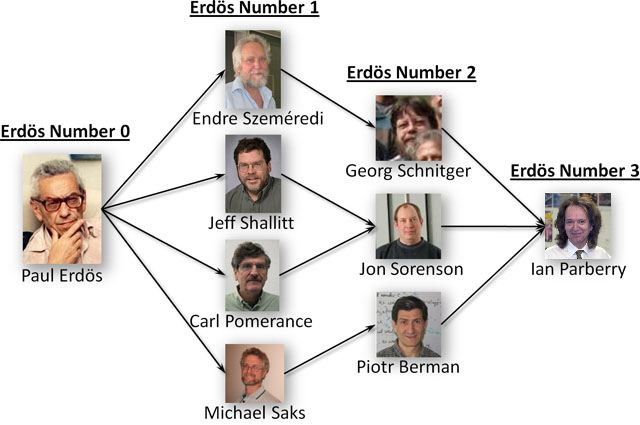

-
Dr Mojtaba Shahin,Assistant Professor) in Software Engineering, RMIT University
-
Dr Peng Liang,Professor in Software Engineering,School of Computer Science, Wuhan University
-
Dr Valentina Lenarduzzi,Assistant Professor (Tenure Track) - University of Oulu (M3S); Docent LUT University
-
Dr Amir Mosavi,scientist - Dresden University of Technology, Obuda University
-
Dr Shahab Shamshirband, Associate Professor of Computer Science, NYUST (Taiwan)
-
Dr Mohammad Ghasemi Gol,Assistant Professor, University of Birjand

-
Dr Taghi Javdani Gandomani, Assistant Professor, Shahrekord University
-
Mr Javad Hassannataj Joloudari, Researcher of Artificial Intelligence, University of Birjand
Erdős number
Have you ever heard of the Erdos number?
It's a fun way to measure the collaboration and connection between mathematicians. The idea is simple: if you've written a paper with someone who has an Erdos number of 1, then your Erdos number is 2.
If you've written a paper with someone who has an Erdos number of 2, your Erdos number is 3, and so on.

My Erdős number
I'm excited to share that my Erdos number is 4 😍 Check from this Link .
It's not the smallest Erdos number out there, but it's still pretty cool to know that I'm just 4 degrees of separation away from one of the greatest mathematicians of the 20th century. For those who don't know, Paul Erdos was a prolific mathematician who wrote more than 1,500 papers and collaborated with hundreds of other mathematicians during his lifetime.
Being connected to such an influential mathematician is a great honor, and it makes me proud of all the collaborations I've had so far in my own career. Whether it's in research, academia, or industry, I believe that working together is the best way to achieve great things. So let's keep collaborating and pursuing our passions, and who knows - maybe one day we'll all have an Erdos number to brag about.